|
Summer Vacation 2026 in the US
-
Enjoying the sunset at Grand Canyon National Park
Grand Canyon National Park, Arizona, United States
August 24, 2026
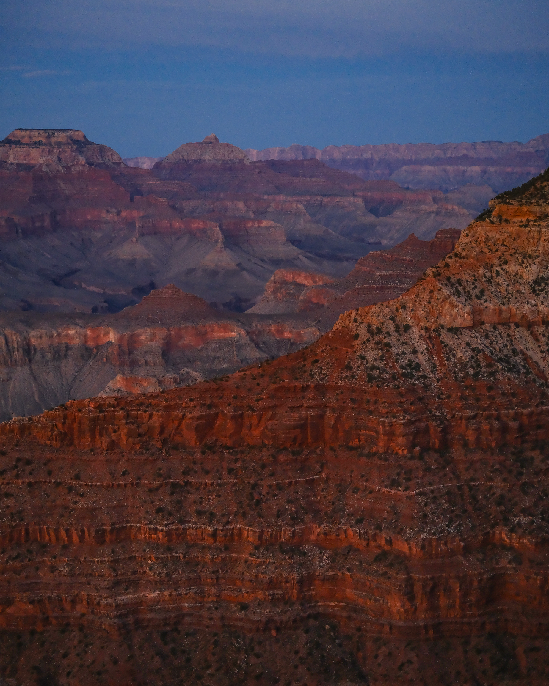
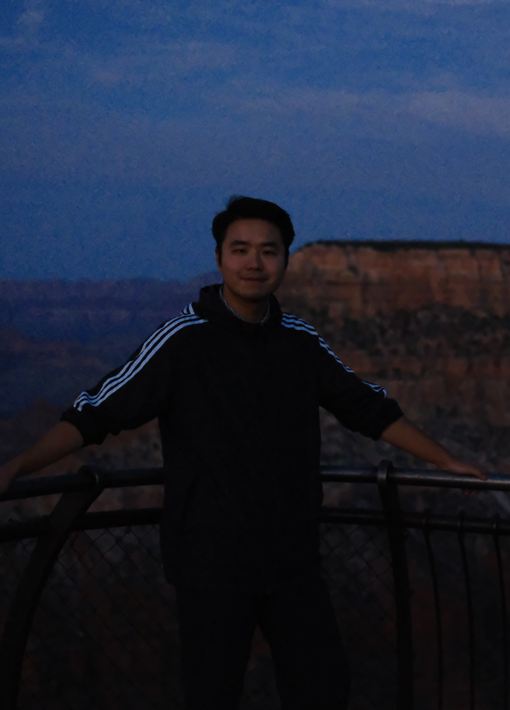
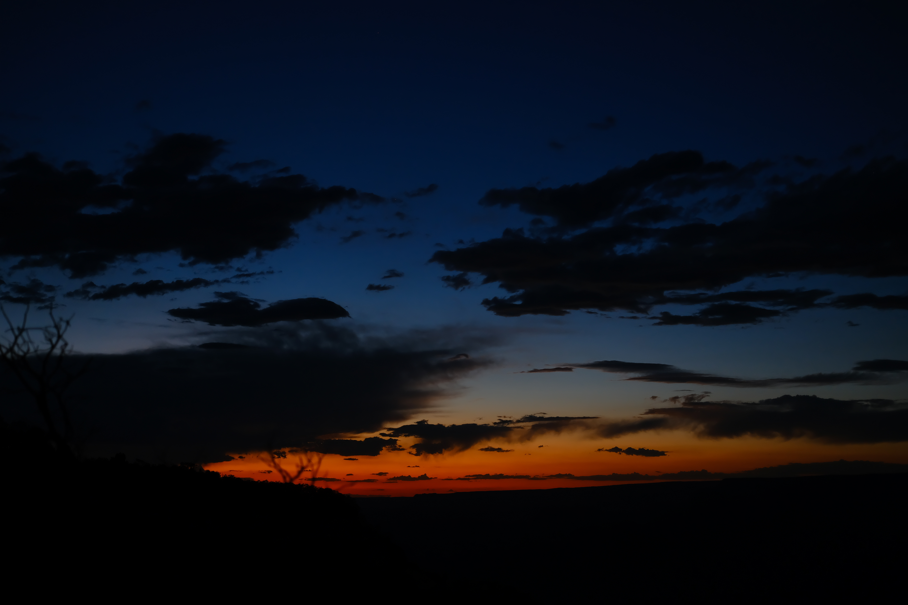
-
Taking in the views of Lake Powell under the desert sun
Lake Powell, Utah and Arizona, United States
August 27, 2026
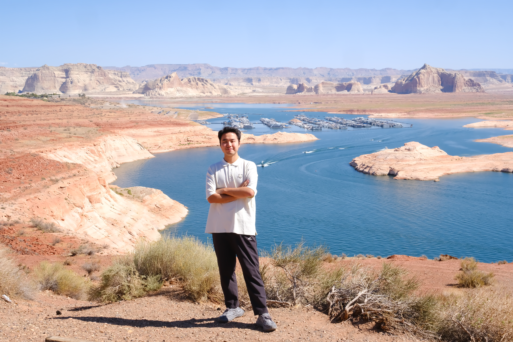
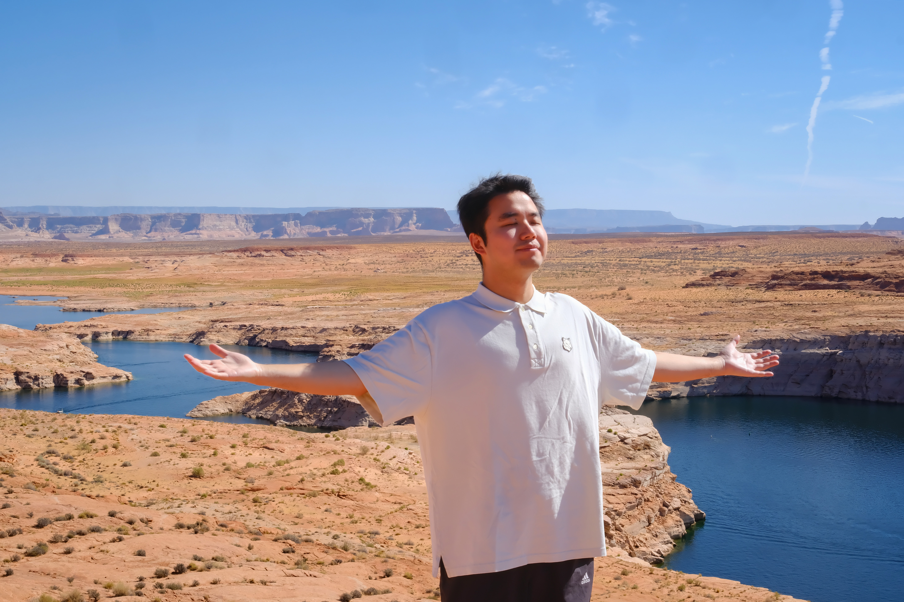
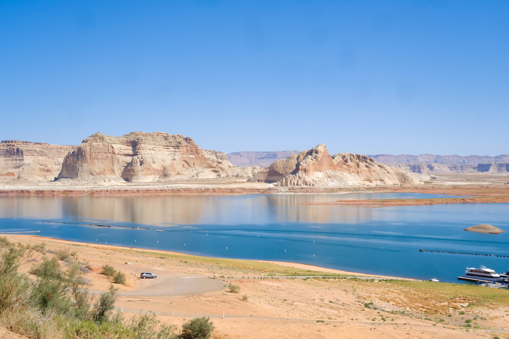
-
Spotting a desert bighorn sheep in Zion National Park!
Zion National Park, Utah, United States
August 27, 2026
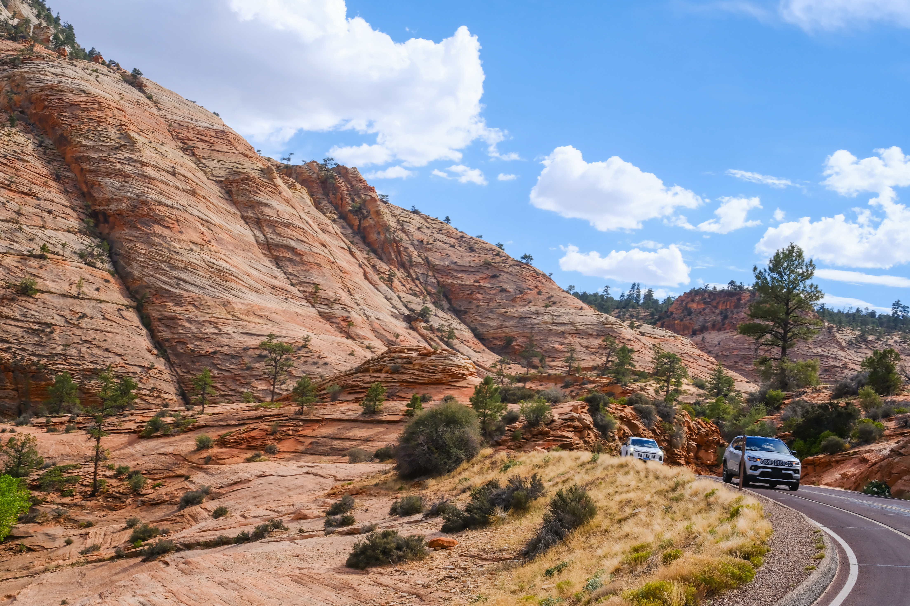
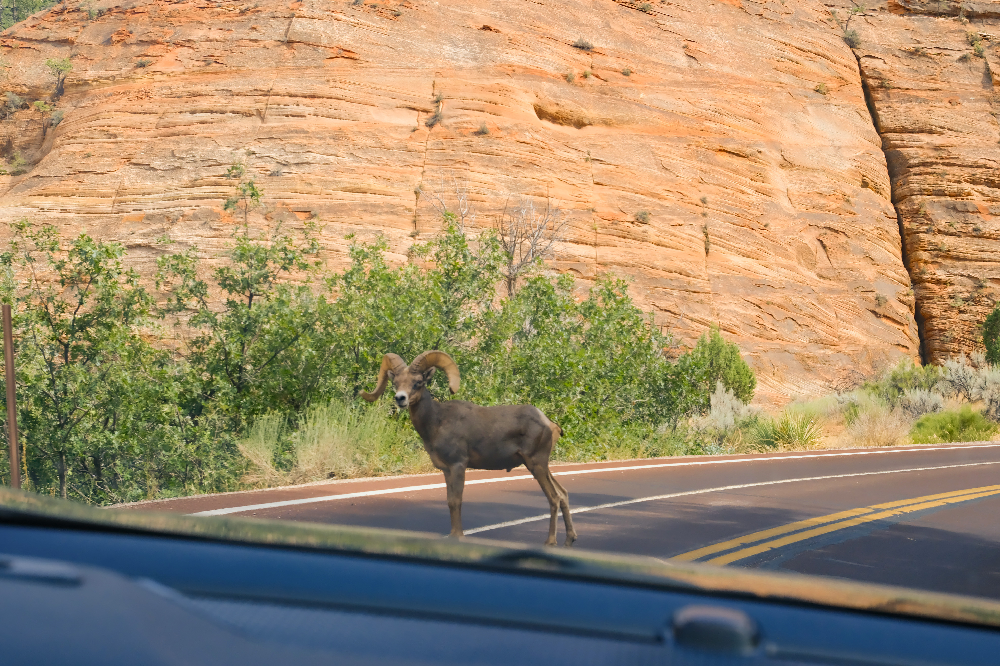
-
Seeing the dramatic hoodoos (irregular columns of rock) of Bryce Canyon
Bryce Canyon National Park, Utah, United States
August 27, 2026
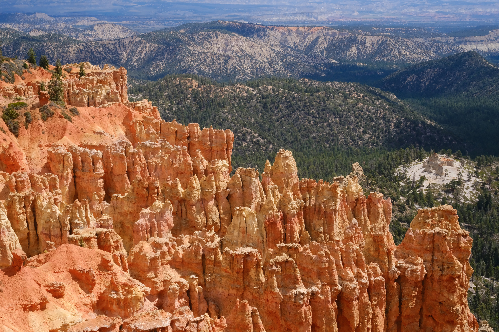
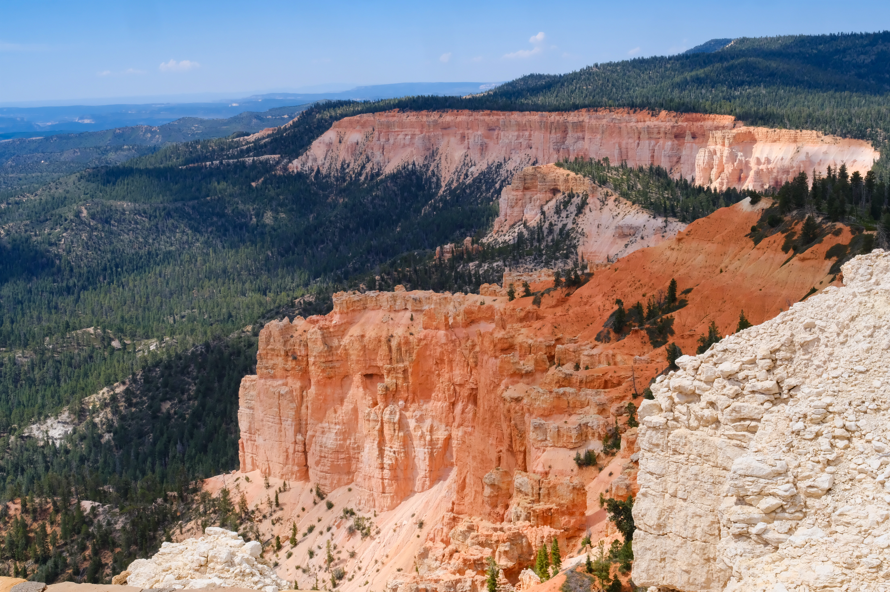
-
Exploring Yellowstone’s geyser basins and open landscapes
Yellowstone National Park, Wyoming, United States
August 28, 2026
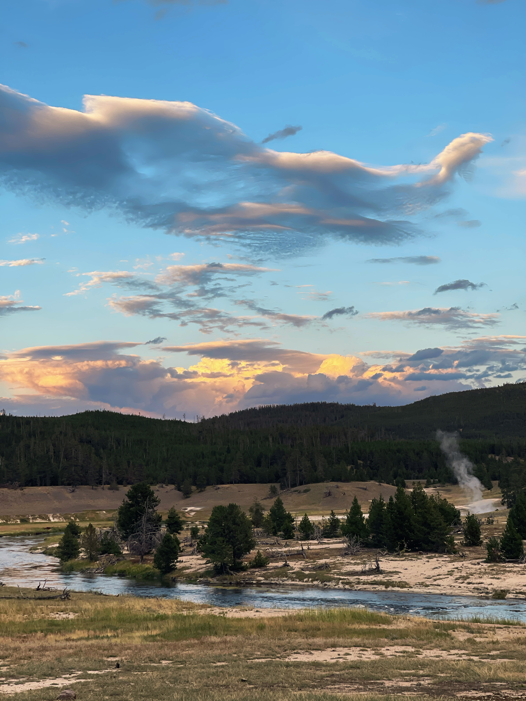
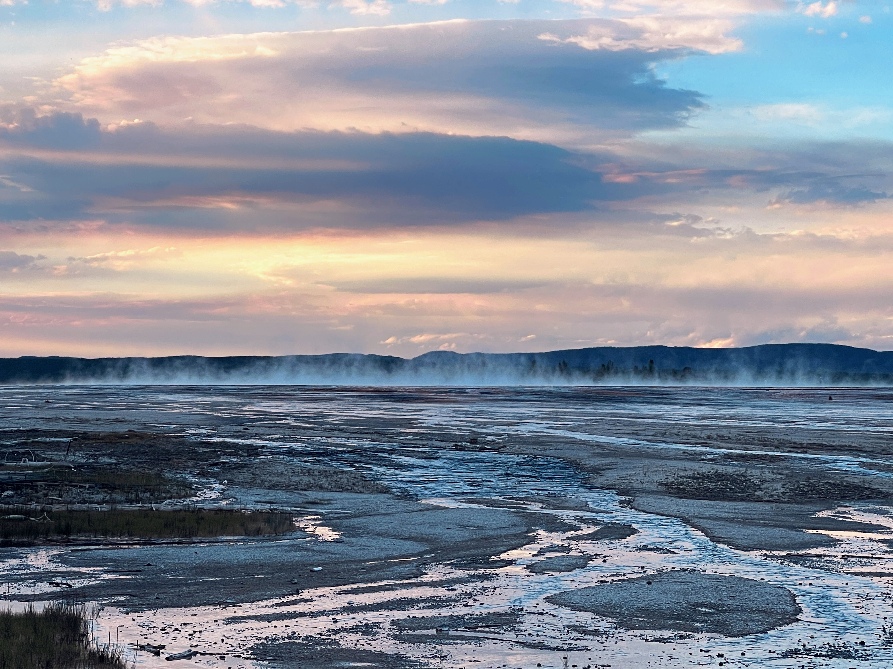
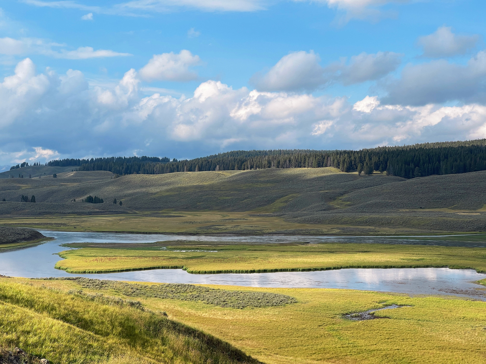
|